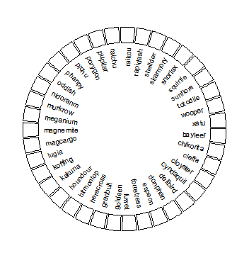
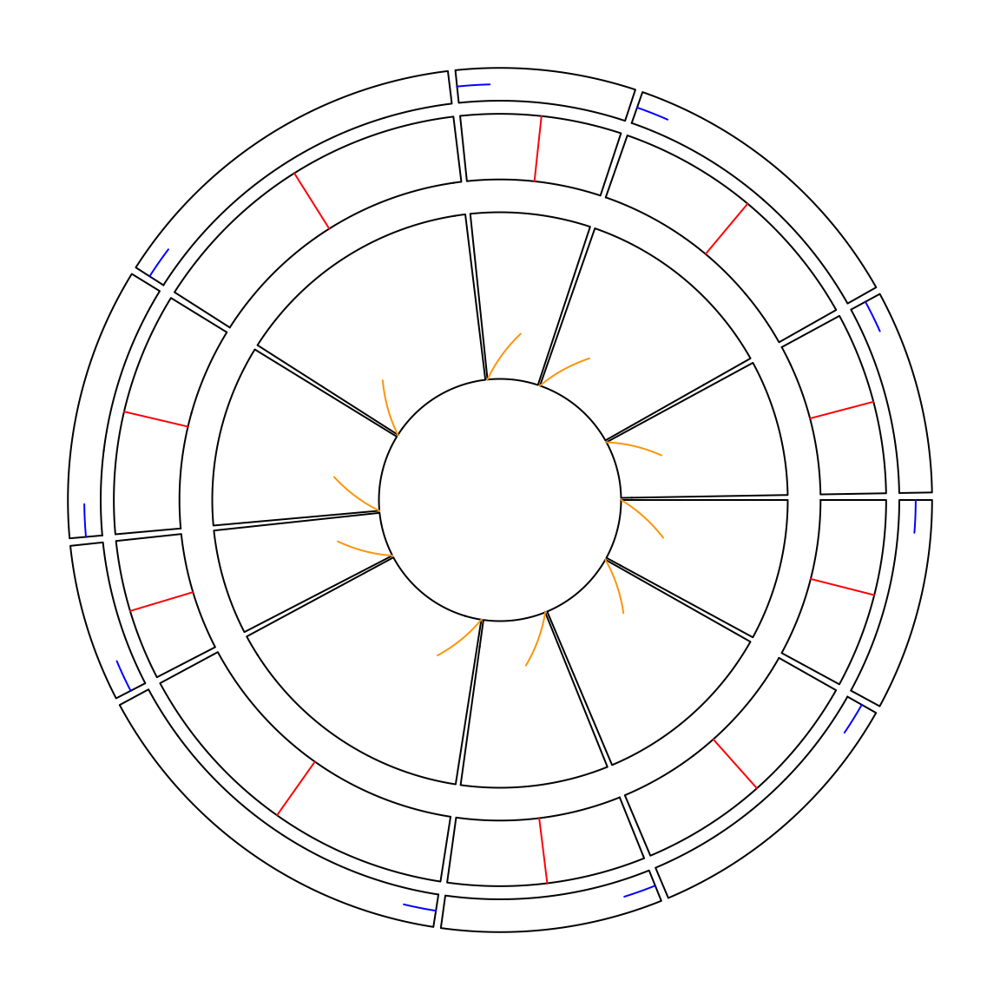

Circular layout
Other utilities
library(yaml)
data = yaml.load_file("https://raw.githubusercontent.com/Templarian/slack-emoji-pokemon/master/pokemon.yaml")
set.seed(123)
pokemon_list = data$emojis[sample(length(data$emojis), 40)]
pokemon_name = sapply(pokemon_list, function(x) x$name)
pokemon_src = sapply(pokemon_list, function(x) x$src)
library(EBImage)
par1 = ccPar("points.overflow.warning" = FALSE)
cc = ccPlot(sectors = pokemon_name, xlim = c(0, 1))
track1 = ccTrack(ylim = c(0, 1), panel.fun = function(x, y) {
circos.text(CELL_META$xcenter, CELL_META$cell.ylim[1] - mm_y(2),
CELL_META$sector.index, facing = "clockwise", niceFacing = TRUE,
adj = c(1, 0.5), cex = 0.6)
}, bg.border = 1, track.height = 0.15)
cc + par1 + track1

Add raster image to the circular plot.
Absolute units
sectors = letters[1:10]
par1 = ccPar(cell.padding = c(0, 0, 0, 0), track.margin = c(0, 0))
cc = ccPlot(sectors = sectors, xlim = cbind(rep(0, 10), runif(10, 0.5, 1.5)))
track1 = ccTrack(ylim = c(0, 1), track.height = mm_h(5),
panel.fun = function(x, y) {
circos.lines(c(0, 0 + mm_x(5)), c(0.5, 0.5), col = "blue")
})
track2 = ccTrack(ylim = c(0, 1), track.height = cm_h(1),
track.margin = c(0, mm_h(2)),
panel.fun = function(x, y) {
xcenter = get.cell.meta.data("xcenter")
circos.lines(c(xcenter, xcenter), c(0, cm_y(1)), col = "red")
})
track3 = ccTrack(ylim = c(0, 1), track.height = inch_h(1),
track.margin = c(0, mm_h(5)),
panel.fun = function(x, y) {
line_length_on_x = cm_x(1*sqrt(2)/2)
line_length_on_y = cm_y(1*sqrt(2)/2)
circos.lines(c(0, line_length_on_x), c(0, line_length_on_y), col = "orange")
})
cc + par1 + track1 + track2 + track3

Setting absolute units